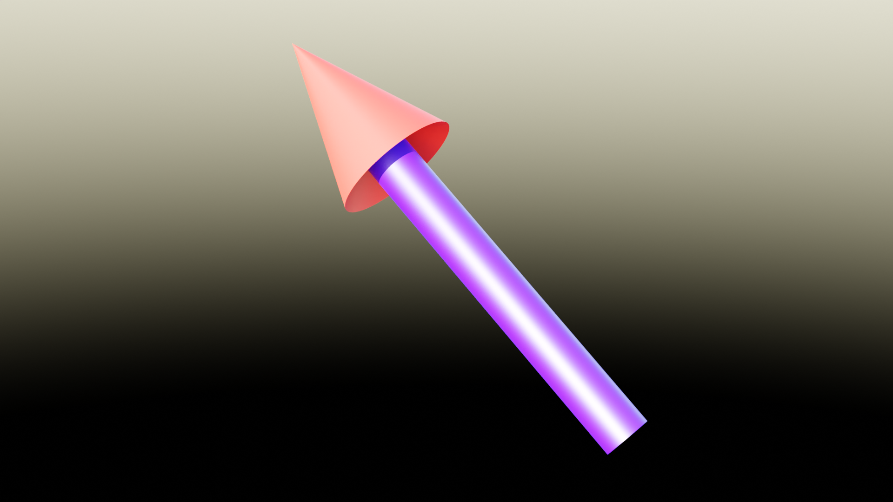
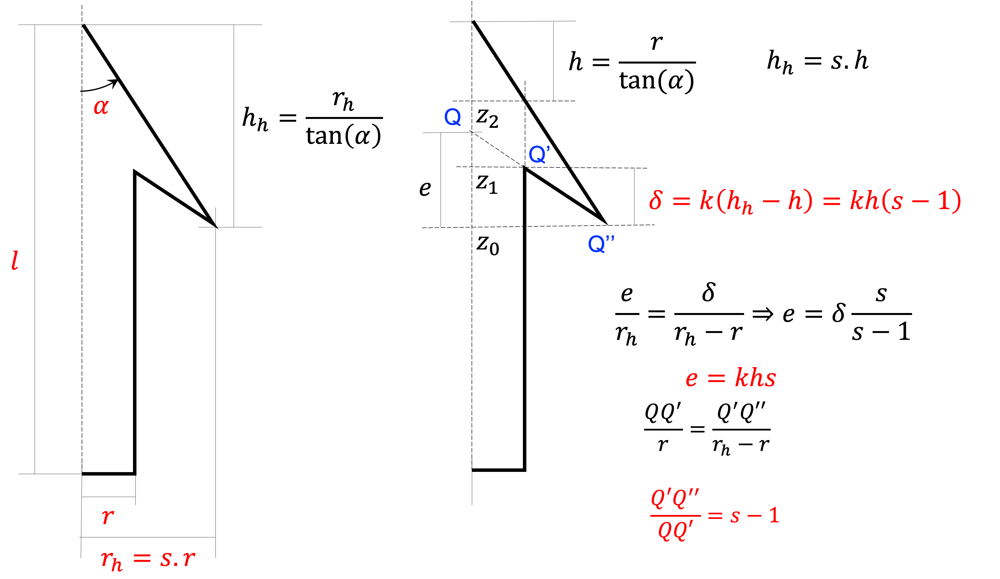
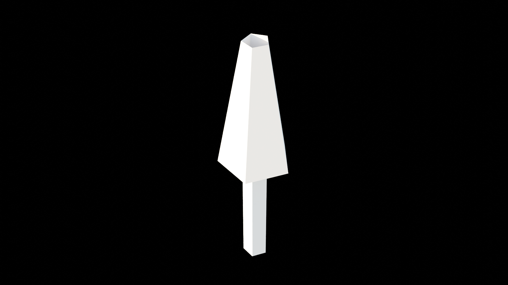

程序化建模#
提示
本篇教程将指导你创建一个参数化的三维箭头模型。
目标#
我们需要不同分辨率，外观，大小的箭头，并且朝向特定的方向。
我们想用修改器来控制这些参数，包括轴和箭头上的材料。
下图显示了我们想要构建的东西:
参数#
要创建的参数如下:
Name |
Type |
Description |
|---|---|---|
Length |
Float |
箭头的总长度，包括箭头 |
Radius |
Float |
箭杆半径 |
Head size |
Float |
箭头头部的大小，表示为箭杆半径的倍数 |
Head angle |
Float (Angle) |
箭头尖峰的角度 |
Recess |
Float |
箭轴穿透箭头的“深度”有多深 (0: flat, 1: max) |
Vertices |
Integer |
定义初始圆环的点数，点数越多，圆越光滑 |
稍后我们将添加补充参数，但目前，这些参数允许构建箭头。好的做法是在树的开始处声明参数。
import numpy as np
import geonodes as gn
with gn.Tree("Arrow") as tree:
length = gn.Float.Input(1, "Length", min_value=0)
r = gn.Float.Input(0.1, "Radius", min_value=0.001)
s = gn.Float.Input(2, "Head size", min_value=1.001)
angle = gn.Float.Angle(np.radians(20), "Angle", 、
min_value=np.radians(10), max_value=0.999*gn.pi/2)
k = gn.Float.Input(0.5, "Recess", min_value=0., max_value=0.99)
vertices = gn.Integer.Input(12, "Vertices", min_value=3)
数学计算#
我们将通过沿着z轴向上挤压一个基盘来构建箭头，然后扩大圆柱体来构建箭头。根据参数构建箭头需要一些数学运算。
下面给出了相应的python代码:
# ----- Arrowhead radius from the shaft radius
rh = r*s
# ----- Arrowhead height from the angle
tg = gn.tan(angle)
hh = rh/tg
z0 = length - hh
# ----- Recess computation
h = r/tg
d = k*h*(s - 1)
z1 = z0 + d
z2 = z0 + k*h*s
边缘挤出#
起点是一个圆盘:
arrow = gn.Mesh.Circle(vertices=vertices, radius=r, fill_type='NGON')
上面计算了轴的长度，它等于z1。因此，轴是通过挤压圆盘边缘到z1来建造的:
edges = arrow.edges
top, _ = edges.extrude(offset=(0, 0, 1), offset_scale=z1)
挤出方法返回两个布尔选择。第一个是对挤压边缘的选择，第二个是对侧面的选择。这些面孔目前是没用的。在最终版本中，我们将设置材质的面，我们将收集面。
下一个挤压步骤是向下和向外挤压边缘。在上面的方案中，我们在点Q’，想要挤压到点Q’。挤压方向由矢量QQ’给出。挤压量由数学公式给出。
Note
当点Q唯一时，点Q’和点Q”是多个(形成轴的上圆的点)。
top, _ = edges[top].extrude(offset=edges[top].position - (0, 0, z2), offset_scale=s - 1)
要完成箭头，我们只需从当前位置挤压到箭头顶部:
top, _ = edges[top].extrude(offset=(0, 0, length) - edges[top].position)
第一个版本#
第一个版本的箭头是这样的:
import numpy as np
import geonodes as gn
with gn.Tree("Arrow") as tree:
length = gn.Float.Input(1, "Length", min_value=0)
r = gn.Float.Input(0.1, "Radius", min_value=0.001)
s = gn.Float.Input(2, "Head size", min_value=1.001)
angle = gn.Float.Angle(np.radians(20), "Angle", \
min_value=np.radians(10), max_value=0.999*gn.pi/2)
k = gn.Float.Input(0.5, "Recess", min_value=0., max_value=0.99)
vertices = gn.Integer.Input(12, "Vertices", min_value=3)
with tree.layout("Maths stuff..."):
# ----- Arrowhead radius from the shaft radius
rh = r * s
# ----- Arrowhead height from the angle
tg = gn.tan(angle)
hh = rh / tg
z0 = length - hh
# ----- Recess computation
h = r / tg
d = k * h * (s - 1)
z1 = z0 + d
z2 = z0 + k * h * s
# -----Extrusion
arrow = gn.Mesh.Circle(vertices=vertices, radius=r, fill_type='NGON')
edges = arrow.edges
top, _ = edges.extrude(offset=(0, 0, 1), offset_scale=z1)
top, _ = edges[top].extrude(offset=edges[top].position - (0, 0, z2), offset_scale=s - 1)
top, _ = edges[top].extrude(offset=(0, 0, length) - edges[top].position)
# ----- Output the arrow
tree.og = arrow
边和顶点的位置#
箭头看起来不错，但顶点数量少时出现了一个问题：顶点不在箭头顶部连接。例如，有5个顶点，箭头如下所示:
这是因为我们利用边缘的位置来挤压边缘。边的位置应该在一个圆上，而实际上，边的位置是它们两个顶点的平均值。当边的位置在圆内时，顶点在圆上。挤压指示在边上，但操作在顶点上。顶点的位置是从它们所在的两条边的位置中扣除的。这个计算位置甚至更靠近圆盘内部。
为了纠正这一点，我们必须用顶点数计算出的因子来纠正边的位置。这是圆的精度问题导致的，更正如下:
# ----- polygon correction factor
# Extrusion uses edge position which is the mean of the two
# extremities. The vertices position is then computed as the mean
# of the two edges. Twice a cosine factor
f = 1 / gn.cos(gn.pi / vertices) ** 2
fac = gn.Vector((f, f, 1))
然后:
top, _ = edges[top].extrude(offset=edges[top].position*fac - (0, 0, z2), offset_scale=s - 1)
top, _ = edges[top].extrude(offset=(0, 0, length) - edges[top].position*fac)
材质#
我们想应用材质:一个材质赋予箭杆和另一个材质赋予给剩下的。
Material是faces的属性，然后我们将代码修改为:
获取材料作为输入
得到挤压的面
把材料放到面上
# Materials to apply
shaft_mat = gn.Material.Input(None, "Shaft")
head_mat = gn.Material.Input(None, "Arrowhead")
# ...
arrow = gn.Mesh.Circle(vertices=vertices, radius=r, fill_type='NGON')
# Apply the material to the base disk
arrow.faces.material = head_mat
# Applying material to extruded faces
top, sides = arrow.edges.extrude(offset=(0, 0, 1), offset_scale=z1)
arrow.faces[sides].material = shaft_mat
top, sides = edges[top].extrude(offset=edges[top].position*fac - (0, 0, z2), offset_scale=s - 1)
arrow.faces[sides].material = head_mat
top, sides = edges[top].extrude(offset=(0, 0, length) - edges[top].position*fac)
箭头朝向#
我们要确定箭头的方向。方向可以是参考对象方向的副本，也可以是目标对象的跟踪。
我们需要添加一个对象和一个布尔选项来指示如何使用该对象:
obj = gn.Object.Input(None, "Orientation")
track_obj = gn.Boolean.Input(True, "Track", description="Track object if True, copy rotation otherwise")
在标准python中，我们将使用if语句。
但在这里，我们需要计算两个方向并使用交换节点:
rot_copy = obj.rotation(transform_space='ORIGINAL')
loc = obj.location(transform_space='RELATIVE')
rot_track = gn.Vector.AlignToVector(vector=loc, axis='Z')
arrow.transform(rotation=rot_copy.switch(track_obj, rot_track))
最后的版本#
最后的代码包括一个平滑选项。
Note
你可能想给箭头添加一个细分表面修饰符。为了得到一个好的结果，我们必须给“水平”边添加一个折痕属性等于1。但在写这个教程的时候，Blender中有一个已知的 bug (T99310)，当你试图设置名为“crease”的属性时，它会崩溃。代码使用“等待”的名称，而不是“crease”。
from imare import *
init_modules(__file__, "imare", "geonodes")
flush_data()
import geonodes as gn
from geonodes.nodes import nodes
import numpy as np
rad = np.radians
mat_a = bpy.data.materials.new("a")
mat_a.diffuse_color = (1, 0, 0, 1)
mat_b = bpy.data.materials.new("b")
mat_b.diffuse_color = (0, 0, 1, 1)
with gn.Tree("坐标计算", group=True):
# fmt:off
l = gn.Float.Input(1, "Length", min_value=0)
r = gn.Float.Input(0.1, "Radius", 0.001)
s = gn.Float.Input(2, "Head size", 1.001)
α = gn.Float.Angle(rad(20), "Angle", rad(10), rad(89.999))
k = gn.Float.Input(0.5, "Recess", 0, 0.99)
# fmt:on
# 箭头半径 = 箭杆半径 * 系数
rh = r * s
tg = gn.tan(α)
hh = rh / tg
z0 = l - hh
h = r / tg
d = k * h * (s - 1)
z1: gn.Float = z0 + d
z2: gn.Float = z0 + k * h * s
z1.to_output("z1")
z2.to_output("z2")
with gn.Tree("坐标修正", group=True):
vertices = gn.Integer.Input(12, "Vertices", min_value=3)
f = 1 / gn.cos(gn.pi / vertices)**2
fac = gn.Vector((f, f, 1))
position = nodes.Position().position
corrected_pos = position * fac
corrected_pos.to_output("Position")
with gn.Tree("Geometry Nodes", reroute=False) as tree:
# fmt:off
l = gn.Float.Input(1, "Length", min_value=0)
r = gn.Float.Input(0.1, "Radius", 0.001)
s = gn.Float.Input(2, "Head size", 1.001)
α = gn.Float.Angle(rad(20), "Angle", rad(10), rad(89.999))
k = gn.Float.Input(0.5, "Recess", 0, 0.99)
# fmt:on
vertices = gn.Integer.Input(12, "Vertices", min_value=3)
corrected_pos = getattr(gn.Trees(), "坐标修正")(vertices=vertices).position
z = getattr(gn.Trees(), "坐标计算")(length=l, radius=r, head_size=s, angle=α, recess=k)
z1, z2 = z.z1, z.z2
# -----Extrusion
arrow = gn.Mesh.Circle(vertices=vertices, radius=r, fill_type='NGON')
arrow.faces.set_material("a")
top, sides = arrow.edges.extrude(offset=(0, 0, 1), offset_scale=z1)
top, sides = arrow.edges[top].extrude(offset=corrected_pos - (0, 0, z2), offset_scale=s - 1)
arrow.faces[sides].set_material("b")
top, sides = arrow.edges[top].extrude(offset=(0, 0, l) - corrected_pos)
obj = gn.Object.Input(None, "Orientation")
# obj = nodes.ObjectInfo(obj)
rot_copy: gn.Vector = obj.rotation(transform_space='ORIGINAL')
loc = obj.location(transform_space='RELATIVE')
rot_track = gn.Vector.AlignToVector(vector=loc, axis='Z')
arrow.transform(rotation=rot_copy.switch(True, rot_track))
# ----- Output the arrow
tree.og = arrow
Tree({
O.cube @ "Cube": {
Mod.geometry_nodes: {
"node_group": "Geometry Nodes",
},
},
}).load()